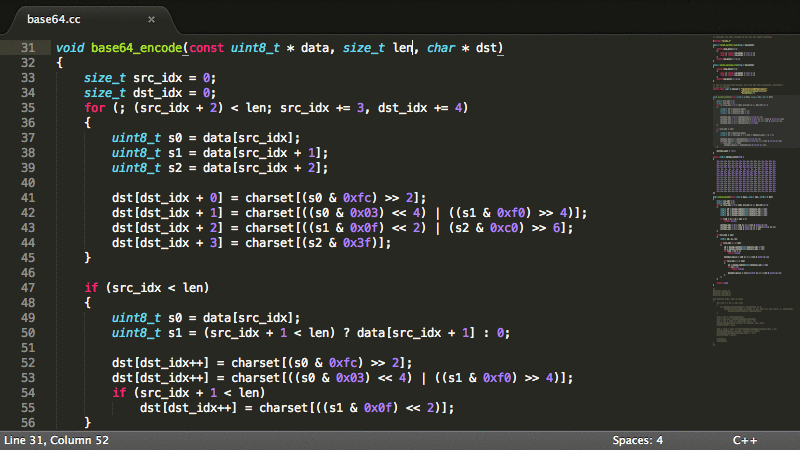

Sublime Text est un éditeur de texte générique codé en C++ et Python, disponible sur Windows, Mac et Linux. Le logiciel a été conçu
tout d'abord comme une extension
pour Vim, riche en fonctionnalités1.Depuis la version 2.0, sortie le 26 juin 20122, l'éditeur prend
en charge 44 langages de programmation majeurs, tandis que des
plugins sont souvent disponibles pour les langages plus rares.
